WSF_LADAR_SENSOR¶
- sensor WSF_LADAR_SENSOR¶
sensor <name> WSF_LADAR_SENSOR ... Platform Part Commands ... ... sensor Commands ... mode <name> ... Antenna Commands ... ... Common Mode Commands ... # Mode Commands background_temperature or background_irradiance ... # Detection Processing Commands integration_gain ... detection_threshold ... detection_probability ... # Transmitter Commands transmitter ... Common Transmitter Commands ... aperture_diameter ... optics_transmission_factor ... beam_divergence_angle ... end_transmitter # Receiver Commands receiver ... Common Receiver Commands ... aperture_diameter ...'' optics_transmission_factor ... quantum_efficiency ... detector_gain ... circuit_temperature ... circuit_capacitance ... dark_current_rate or dark_current ... focal_length ... detector_size ... end_receiver end_mode end_sensor
Overview¶
WSF_LADAR_SENSOR implements a baseline direct-detection LADAR sensor. The model provides the radiometry and detection processing while the simulation framework provides all of the geometry computations and determination of target attributes such as projected area and reflectivity. It fully supports the implementation of multiple modes as defined in sensor.
The main product of the sensor is a track (WsfTrack). Tracks are created using the normal track formation criteria as defined in common sensor mode commands. Sensor errors may also be included.
Some general notes on the proper use of this sensor:
Target platforms should have optical_signature and optical_reflectivity definitions.
The detection model does not account for mis-cueing of the sensor (it is not like a radar that has an antenna_pattern that causes the gain to diminish if the target is located off-boresight.) To prevent a target from being seen if too far off bore-sight always specify ‘field-of-view’. For example, within a mode definition enter the following Antenna Commands:
azimuth_field_of_view -1 deg 1 deg
elevation_field_of_view -1 deg 1 deg
Do not set the field of view too small as the tracks that are supplying the cueing information are often not updated at the same rate as a real system.
Mode Commands¶
- background_temperature <temperature-value>¶
- background_irradiance <spectral-irradiance-value>¶
These commands are used to define the background irradiance used to calculate the background noise due to the reflectance of ambient light from the target into the receiver (See the section ‘Computation of Noise’ below for more details.)
background_temperature uses Plank’s law to compute the background irradiance from a blackbody of the specified temperature. background_irradiance can used to specify the background irradiance directly.
Default: background_temperature 5778 K
Detection processing commands¶
These commands are used to determine the probability of detection (Pd) from the signal-to-noise ratio. The Pd can be computed from an internal algorithm or from a user-provided Pd curve.
- integration_gain <value>¶
Defines the gain achieved by integrating multiple pulses.
Default: 1.0
- detection_threshold <value>¶
Defines the signal-to-noise ratio (SNR) that results in a Pd of 0.5.
Note
This command is not used if detection_probability table is defined.
Default: 1.0
- detection_probability <sn1> <pd1> … <snn> <pdn> end_detection_probability¶
If this command is provided it defines a table that is used to determine the probability of detection as a function of signal-to-noise ratio. The user must provide pairs of numbers (signal-to-noise ratio and probability of detection, in that order) that define the curve of Pd vs. SNR.
Transmitter Commands¶
The transmitter block includes the standard transmitter commands, plus commands that are unique to this sensor. The standard transmitter commands utilized by WSF_LADAR_SENSOR follow. Please follow the link for each for a more detailed description.
wavelength - No default; must be specified.
pulse_width - No default; must be specified.
pulse_repetition_interval or pulse_repetition_frequency. No default; must be specified.
bandwidth - Defaults to the frequency equivalent to a wavelength of 1 nanometer.
attenuation_model - Specify the model for computing atmospheric attenuation (typically WSF_OPTICAL_ATTENUATION).
The following commands are unique to WSF_LADAR_SENSOR:
- aperture_diameter <length-value>¶
Defines the aperture diameter of the LADAR transmitter. Changing this parameter controls the diffraction-induced beam spread, affecting the beam size on target. The larger the aperture diameter, the smaller the beam on target, and the greater the energy density (energy density ~ (aperture diameter^2)).
Default: No default. Aperture diameter is required.
- optics_transmission_factor <value>¶
Defines the percentage of the transmitted laser light that passes through the transmitter optics.
Default: 1.0
Note
This should be greater than 0.0 and less than or equal to 1.0.
- beamwidth <angle-value>¶
- beam_divergence_angle <angle-value>¶
Specifies the ‘beam width’ of the the transmitted beam.
Default: None. Must be specified.
Note
‘beam_divergence_angle’ is a synonym that is retained for backwards compatibility.
Receiver Commands¶
The receiver block includes the standard receiver commands, plus commands that are unique to this sensor. The standard receiver commands utilized by WSF_LADAR_SENSOR follow. Please follow the link for each for a more detailed description.
bandwidth - Defaults to the frequency equivalent to a wavelength of 1 nanometer.
The following commands are unique to WSF_LADAR_SENSOR
- aperture_diameter <length-value>¶
Defines the diameter of the LADAR receiver (detector) aperture.
Default: No default. Aperture diameter is required.
- optics_transmission_factor <value>¶
Defines the fraction of the received laser laser light that passes through the receiver optics.
Default: 1.0
Note
This should be greater than 0.0 and less than or equal to 1.0.
- quantum_efficiency <value>¶
The fraction of the signal (number of photons) that is converted into photoelectrons.
Default: 1.0 (100% Efficient)
- detector_gain <value>¶
The gain of the detector.
Default: 1.0
- circuit_temperature <temperature-value>¶
- circuit_capacitance <capacitance-value>¶
These are optional commands used to specify the data needed compute the thermal noise component as described in the ‘Computation of Noise’ section below. Both commands must be specified to enable computation of thermal noise.
Default: None.
- dark_count_rate <frequency-value>¶
- dark_current <current-value>¶
These are optional commands used to specify data needed to compute dark count term in background noise component as described in the ‘Computation of Noise’ section below). One or the other may be specified depending on preference.
dark_count_rate is typically quoted in LADAR performance. If used, dark_current will be used to generate an equivalent dark_current_rate.
Default: None.
Commands Necessary to Compute Instantaneous Field-Of-View¶
If the field of view of the receiver is so narrow that it can see only a portion of the target, then the results will be more accurate if both of the following values should be provided. The amount of transmitted laser energy that is reflected will be limited to the smallest of the following values:
The projected area of the target from its optical_signature.
The area of the transmitted beam at the target plane.
The area of the receivers instantaneous field-of-view (IFOV) at the target plane.
If the target projected area is generally larger than the IFOV then these values are not necessary.
- focal_length <length-value>¶
Specifies the focal length of the receiver optical system.
Default: None
- detector_size <length-value>¶
Specifies the length of one side of the physical detector. It is assumed the detector is square.
Default: None
Computation of Energy Received from the Laser Pulse¶
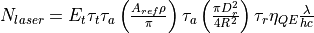
Where:
The number of photons received from the laser pulse.
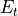
The transmitted energy. This will be described below.
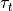
The value of optics_transmission_factor from the transmitter.
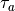
The atmospheric attenuation computed using the attenuation_model from the transmitter
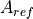
The area from which the laser light is reflected. This will be described below.
The target’s optical_reflectivity
The value of aperture_diameter from the receiver block.
The range between the sensor and the target.
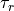
The value of optics_transmission_factor from the receiver block.
The value of quantum_efficiency from the receiver block.
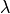
The value of wavelength from the transmitter block.
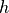
Plank’s constant.
The speed of light.


The transmitted energy is computed using one of the following (depending on what user inputs were provide):
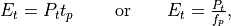
Where:
The value of power from the transmitter block.
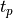
The value of pulse_repetition_interval from the transmitter block.
The value of pulse_repetition_frequency from the transmitter block.


The reflected area, is computed using the minimum:
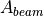 - The area of the laser beam at the target plane.
 - The projected area of the target as defined by its optical_signature.
- The projected area of the target as defined by its optical_signature.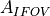 - The area of the receivers instantaneous field of view (IFOV) at the target plane (optional).
The area of the laser beam at the target plane is computed as follows:
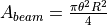
where the value of  is the value of beamwidth from the transmitter.
is the value of beamwidth from the transmitter.
The area of the receivers IFOV at the target plane will be computed as follows if the necessary input items are provided:
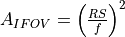
Where:
the range from the receiver to the target.
The value of detector_size from the receiver block.
The value of focal_length from the receiver block.


Computation of Noise¶
Three components of noise are computed:
Background noise.
Thermal noise in the receiver.
The number of photoelectrons due to background noise is composed of three primary components:
The ambient (solar) light reflected from the target back to the receiver.
Electrons that are ‘detected’ even when the receiver aperture is covered (‘dark counts’)
Statistical variations in 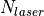.
The light reflected from the target is simply used in the ‘receive’ portion of the same equation used to compute the number of electrons received from the LADAR pulse.
First the radiant intensity of the ambient light is computed as:
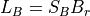
Background irradiance in the bandwidth of the receiver in Watts/meter^2
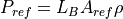
Power reflected from the target area in (W/sr)
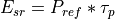
The amount of reflected energy per steradian (J/sr)
Where:
The value of background_irradiance
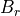
The value of bandwidth form the receiver block.
The reflection area computed in the previous section.
The value of the target optical reflectivity used in the previous section
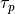
The value of pulse_width from the transmitter block

Then the receive portion of the equations in the previous section is used to compute the number of electrons:
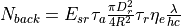
The second component is the number of dark current photoelectrons that occur while the pulse is being received:
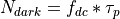
Where:
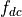
The value of dark_count_rate from the receiver block.
The value of pulse_width from the receiver block.
The composite background is simply:
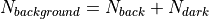
The arrival of signal photons is assumed to be Poissonian, with the unamplified variance in the produced photoelectrons equal to the mean. This variance is also a source of noise:
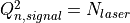
The number of photoelectrons due to thermal noise in the circuit is computed as:
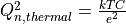
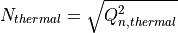
Where:
The value of Boltzmann’s constant.
The value of circuit_temperature from the receiver block.
The value of circuit_capacitance from the receiver block.
The value of the elementary charge (charge of an electron)


Computation of Signal-To-Noise¶
The signal-to-noise ratio (SNR) is computed as:
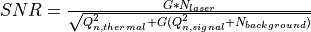
Where:  is the value of detector_gain from the receiver block and the other values are computed as described
in the preceding sections.
is the value of detector_gain from the receiver block and the other values are computed as described
in the preceding sections.